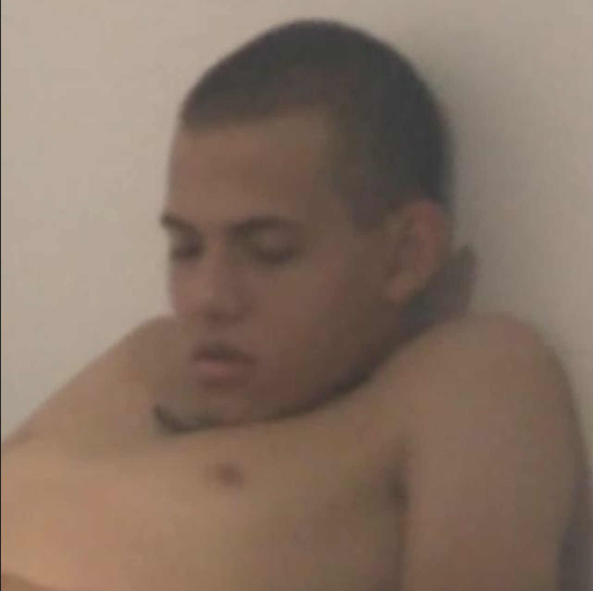

Nasci numa cidade muito pequena chamada Campo Grande, origem dos mais grandiosos bisonhos da T30. Tenho o Moysés desde os meus 11 anos numa desesperada tentativa de farmar aura, mas a minha bisonhice é tão grande que até hoje não li sequer uma página desse livro. Algum dia pensei em fazer o ITA, mas sabia que era simplesmente bisonho demais para passar sem ser na sorte, então decidi responder todas questões usando ASCII e escolhendo cada caractere aleatoriamente. Curiosamente, a minha bisonhice é tão grande que viola as leis da termodinâmica e da estatística, o que permitiu que eu passasse no vestibular. Ao começar o aquartelamento do ITA, a concentração de bisonhice por metro cúbico no meu corpo cresceu tão rapidamente que criou o próprio campo gravitacional no bisonhoverso, um plano da realidade paralelo ao nosso que altera como as pessoas percebem a bisonhice. O campo gravitacional gerado pela minha bisonhice curvou o bisonhespaço-tempo de maneira que os raios de bisonholuz refletidos pelo meu bisonhocorpo não conseguem escapar do bisonhorizonte de bisonhoventos, impedindo que a grande maioria dos alunos de alto IAP percebessem a minha bisonhice, o que, temporariamente, aumentou drasticamente o meu IAS (Índice de Aluno Safo), que é o IAP aparente menos o IAP real. Infelizmente, o grandioso e esplendoroso Aluno Sheldon notou que os raios de bisonholuz que passavam perto do meu bisonhocorpo eram sempre bisonhodesviados, concluindo que isso só poderia acontecer se o meu bisonhocorpo fosse uma lente bisonhogravitacional composta por uma bisonhogularidade de bisonhomassa superior a 1.37 meia-meias. Desde que a verdadeira magnitude da minha bisonhice foi revelada, meu IAS caiu de volta para 0, apesar de eu ter grandes dificuldades para aceitar esse fato auto-evidente.
Durante esse período, tive a oportunidade de desenvolver minhas habilidades em bisonhologia, estudando e aprimorando minha bisonhice em diversos contextos. Participei de inúmeros projetos relacionados à bisonhice, desde a criação de teorias bisonhísticas até a aplicação prática da bisonhice em situações cotidianas. Minha experiência inclui a análise de sistemas bisonhos de alta complexidade, bem como o estudo dos mecanismos da manifestação do bisonhoverso em nossa realidade.
Atualmente, estou envolvido em um programa de iniciação científica focado na toradologia, onde busco aprofundar meus conhecimentos sobre a arte de torar e suas aplicações práticas, especialmente no estudo dos efeitos toradores do Toraz Netto. Este programa me permite explorar as nuances da toradologia, desde as técnicas de toragem até a compreensão dos princípios fundamentais que regem essa prática. Estou comprometido em contribuir para o avanço do conhecimento na área de toradologia, buscando sempre aprimorar minhas habilidades e expandir minha compreensão sobre esse fascinante campo de estudo.
Venha para o 302G (vaga A) me dar um G e perguntar a história caso esteja curioso (obs: a história é SFW, não precisa se preocupar não kkkkkkk)
sugou fazer o resto do meu currículo, vou torar agora
Nome: Victoria Secrets
Contato: (67) 99973-2911
Idade: elevada
IAP (Índice de Aluno Padrão): x tal que ∀𝜀>0 0>x>𝜀 (note que x não existe, portanto, a bisonhice é tamanha que chega a ser indefinido quantificar o IAP)